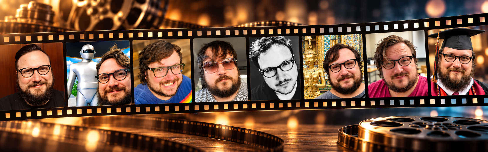

I teach first-year composition and technical communication at Texas State University. I am also a doctoral student at Texas Tech University, studying Thai rhetoric.
I was a bit aimless as a college student until I found my love for English. Then I found rhetoric and composition, and everything changed. Forever.
Before teaching, I worked in imports and exports with dozens of cultures and language groups across Europe, Asia, South America, and the Middle East. I also grew up in a trans-cultural environment. I bring both into my classes. Outside the classroom, I help students and business professionals abroad improve their writing for US settings and US partners.
I start my classes with a debate. A literal one. Students watch "The Measure of a Man," the Star Trek: The Next Generation episode where a hearing decides whether the android Data is a person or property. Then they argue it out. Depending on the course, that debate opens the door to ethics, agency, or whatever concept comes next.
My courses focus on:
| Title | Type | Concept |
|---|---|---|
| Sicario | Film | Spatial rhetoric and liminality |
| Get Out | Film | Embodiment and commodification |
| The Fifth Element | Film | Speculative futurity and temporal presentism |
| Die Hard | Film | Performative masculinity and genre boundaries (is it a Christmas movie?) |
| Moonlight | Film | Subject formation |
| The Measure of a Man | TV episode | Personhood and agency |
| Semantic Error | TV series | Cross-platform adaptation |
| My School President | TV series | Cross-cultural comparative rhetoric |
My research draws on: